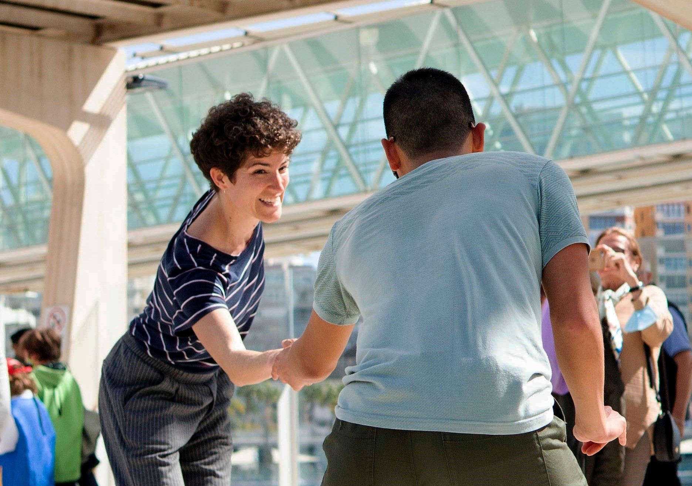

Bachata is a style of social dance from the Dominican Republic which is now danced all over the world.
WATCHSocial dance is dance which is recreational and usually performed with a partner and in groups or as a community activity for fun and enjoyment. Sometimes it does require a partner but simply a number of people in a group.
In contemporary times it may also be the activity of a specialist dance club in providing a particular form of social dance where people may meet and engage regularly with a change of partners from dance to dance. A bit of a chat as part of this interchange is of paramount importance on the social side.
Kizomba is a dance and musical genre that originated in Angola in 1984.
WATCH

Swing dance is a group of social dances that developed with the swing style of jazz music in the 1920s–1940s, with the origins of each dance predating the popular "swing era".
WATCHSemba is a traditional type of music and dance from Angola.
WATCHBrazilian Zouk is a partner dance which began in Brazil during the early 1990s. Brazilian Zouk evolved from the partner dance known as the Lambada.
WATCH...
...